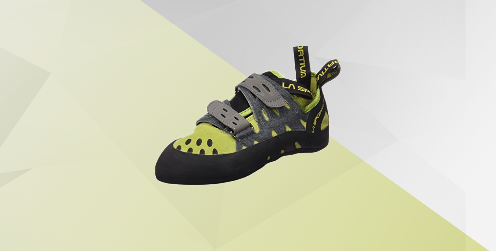
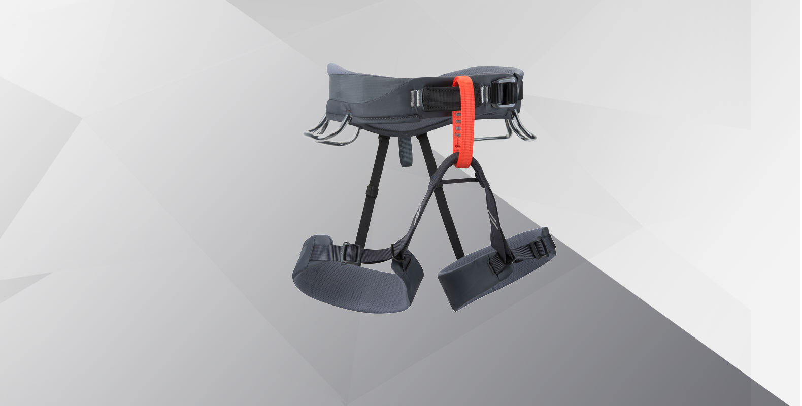
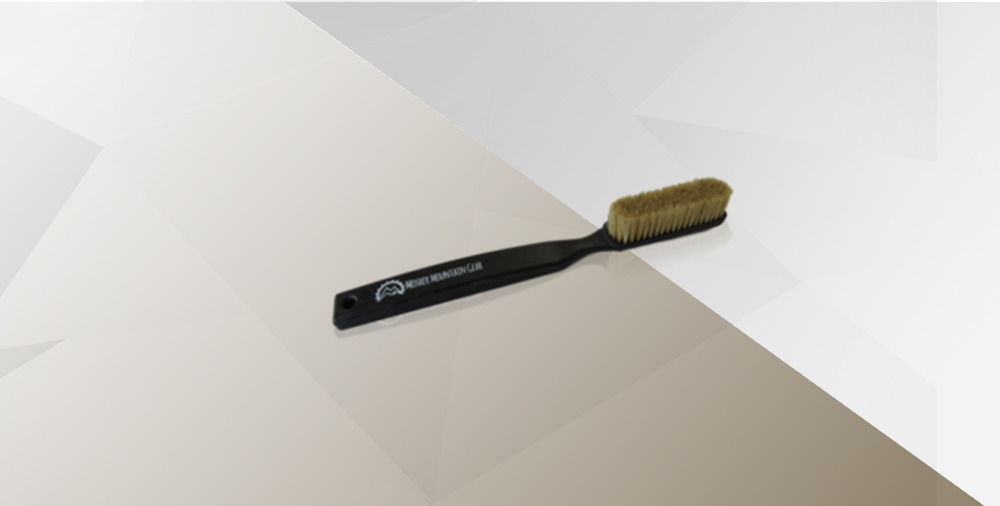
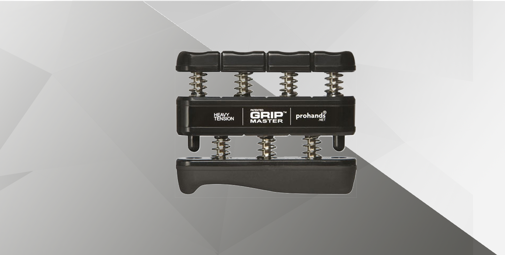
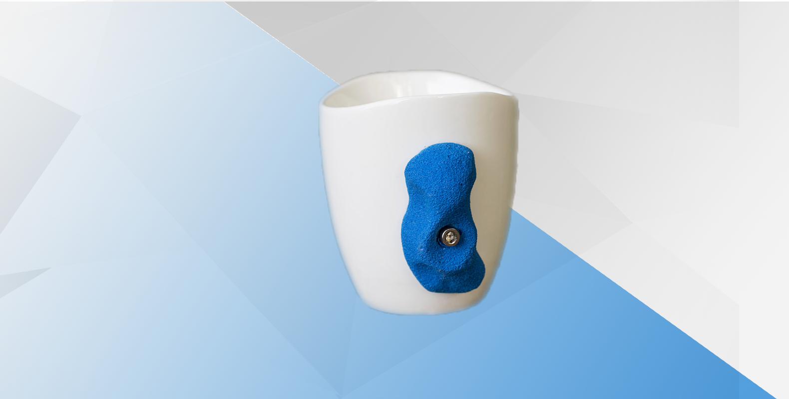
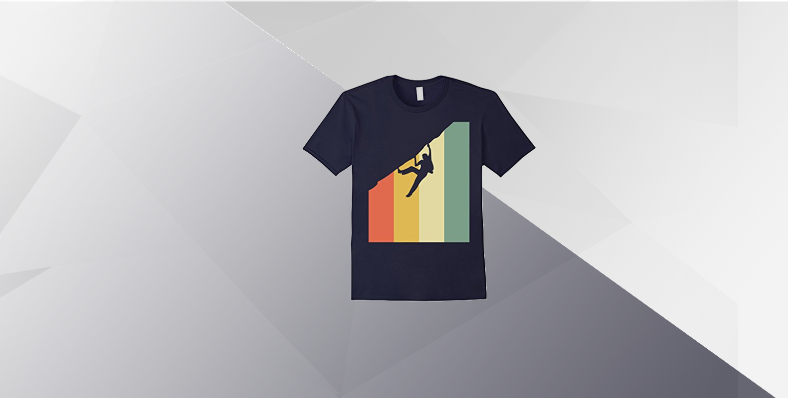

The holiday season is quickly approaching. You may not know what to buy your friends that spend way too much time rock climbing. Well I've got your back. Here is my comprehensive list of the top 10 best gifts for any indoor rock climber.
La Sportiva TarantuLace Rock Climbing Shoe
Incredible shoes for any climber
Climbing shoes are one of the few basic necessities for rock climbers. This is one of the most solid pairs you can buy. Comfortable enough to wear all-day, but still great on the wall. One of the highest reviewed rock climbing shoes on the market, at a fair price. These shoes are suitable for any skill-level and there is even a women's varient. Can't go wrong with these.
Black Diamond White Gold Loose Chalk
You can't be a "real" climber without a ridiculous amount of chalk

Climbing chalk always seems to be something that climbers run out of. Chalk drys out climbers hands and helps their grip significantly. Also, it's the #1 thing climbers blame when they fall off the wall. Whether you have sweaty hands, or you need a little edge on your climbing game, climbing chalk is a great way to go. Not to mention, Black Diamond is one of the most reputable brands and at this price, this is a no-brainer.
Joshua Tree Organic Climbing Salve
You need to protect those climbing hands

This salve is far less common than the last two, however, it is still an incredible product. It has powerful healing properties to treat dry or chapped skin, as well as abrasions, scrapes, and cuts. It does all of this while keeping your precious calluses. Developed by climbers for climbers and made with 100% organic ingredients, this salve can be a great addition to any climber's gym bag.
Black Diamond Momentum Harness
They'll never fall with this harness
Buying your loved one a climbing harness can be the best way to give your support of their climbing hobby metaphorically and physically. This harness will make sure the climber in your life is safe and comfortable while on the wall. With patent-pending trakFIT adjustment for esay leg loop customization, this harness is easily one of the best out there. Whether climbing inside a gym or out, this harness can do it all and you'll look good while doing it.
Mosher Mountain Gear Premium Boar Hair Climbing Brush
Sometimes the holds are too chalky, gotta brush 'em off
The climbing brush, easily one of the most underrated tools for climbers out there. Chalk tends to build up on holds, so much so that the holds get slippery at times. This could be a big problem, but this brush can be your savior. Made from boar's hair, this brush has a great balance of softness and strength. Super easy to fit in your chalk bag, this climbing brush can really come in handy.
Gripmaster Hand Exerciser
For making sure those fingers are stronger than ever
Contrary to popular belief, climbing isn't all about having massive arms. So much of climbing is having a strong grip and this is where the Gripmaster Hand Exerciser comes into play. For hand, wrist, and forearm strength, this gripmaster will ensure that you will be ready for any terrible hold that comes your way. It comes in 3 models with varying resistance so you can increase your resistance over time. Guaranteed to help any climber get a better grip.
Rock Climbing Mug
So they can practice their holds while drinking coffee
For the hardcore rock climber in you, we have the rock climbing mug. It ensures that even mundane tasks like getting coffee is a bit of a challenge. With a 12 ounce capacity and a climbing hold for it's handle, this mug is no joke. So even when you're not in the gym, this mug will remind you of rock climbing even if it is comically difficult to hold.
Rock T-Shirt
If you're a rock climber, you have to make sure everyone else knows
When you want everyone you know to fully understand that you're a rock climber, we have this cool shirt. Machine washable, 100% cotton, lightweight, classic fit; what more could you really want? Incredibly useful for starting conversations and promoting the sport of climbing, this shirt will serve you many purposes. Not to metion, it is suitable for any type of rock climber.
Metolius Rock Rings 3D
Sometimes you need to practice at home

One of the more obscure gifts on the list, we have the Metolius Rock Rings 3D. You hang these up in your house or backyard, and you can practice your climbing grip. These rock rings are better than any pull up bar and are great for finger strength. They are incredibly portable and innovative, and they even come with comprehensive instructions and training guide.
Sukoa Chalk Bag
Every climber could use a new chalk bag

Now, we'll end with a classic, the Sukoa Chalk Bag. Every climber, no matter the discipline or skill level can undoubtedly use a climbing bag. For when your hands get dry or you need that mental pick-up to give you confidence to try again, chalk will be there for you. This chalk bag holds more than enough chalk, is a sleek black color, and has a strap to hang around your waist while you climb. If you want a safe gift for your climbing friends, you can't go wrong with this.